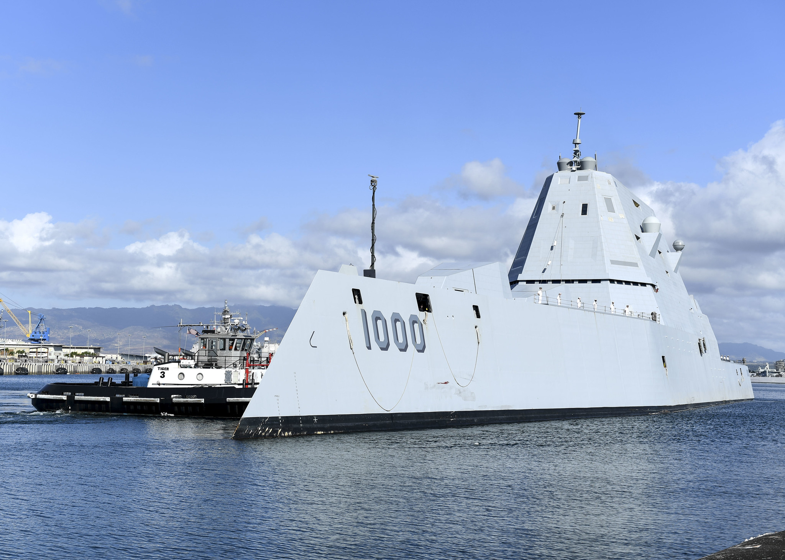

USS ZUMWALT (DDG–1000), a világ jelenleg legmodernebb és legnagyobb vízkiszorítású, irányított rakétákkal felszerelt rombolója. A teljes felszereltséggel közel 15 ezer tonna vízkiszorítású hajó. A Zumwalt-osztálynak sikerrel kell leküzdenie a tenger alatti, a tengeri és a légi célokat egyaránt, ugyanakkor megfelelő tűztámogatást is tud majd nyújtani a tengerészgyalogság partraszállási műveleteihez. A hajó kialakításánál a hagyományos szempontok mellett (tengerállóság, magas fokú automatizálás, az ennek megfelelően kisebb létszámú legénység komfortos elhelyezése) elsődleges szempont volt a felderíthetőség csökkentése. A hajó egyik alapvető feladata a tengeralattjárók elleni harc, s a szonárokkal felderített célok ellen RUM–139B rakéta-póthajtású torpedórendszert alkalmazhat. Az Mk. 57-es merőlegesen beépített fegyvermodulok celláiból indítható rakéta elején egy Mark 46-os könnyű, önirányító torpedó kapott helyet. A már említett Mk. 57-es modulokba összesen nyolcvan rakéta vagy rakéta-póthajtású torpedó helyezhető el.
